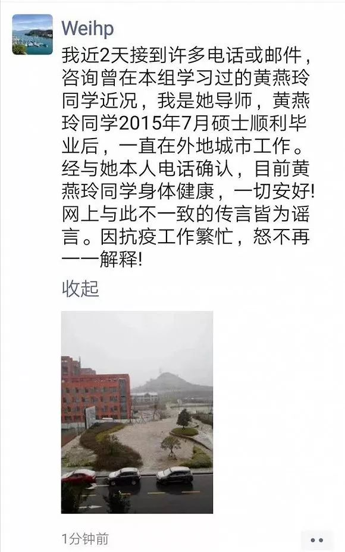

武汉病毒所：网传新冠“零号病人”是该所学生消息不实
原文链接 备份链接 【财新网】（记者 徐路易）中国科学院武汉病毒研究所（下称武汉病毒所）今日发布声明辟谣。2月15日，一则关于“武汉病毒研究所一名女研究生黄某某是新冠病毒肺炎零号病人”的消息在社交媒体上热传。该消息称，新冠肺炎的“零号病 …

图片来源：图虫
“
黄燕玲表示，她本人在成都生活的好好的，造谣者是加拿大华裔。
”
2020年2月16日中午，针对网上热议的“武汉病毒所一研究生系零号病人”的信息，中国科学院武汉病毒研究所在其官网发布公告称，网传信息不实。此前中国科学院武汉病毒研究所研究员石正丽接受新京报采访时明确表示，该所无一人感染新冠肺炎。
2月15日，一则关于“武汉病毒研究所一名女研究生黄某某是新冠病毒肺炎零号病人”的消息在网络流传。网络流传的截图显示：武汉（新冠）病毒肺炎的零号病人是黄燕玲，系武汉病毒所科研人员，2012年考入武汉病毒研究所的硕士研究生。

根据武汉病毒所发布于2011年11月4日的《2012年度推荐免试硕士研究生拟录取名单公示》显示，黄燕玲系西南交大推荐的学术性硕士。
就此次关于黄燕玲的网络传言，据新京报2月15日报道，武汉病毒所研究员石正丽、流感病毒实验室研究员陈全姣二人均表示，对病毒所是否有一位名叫黄燕玲的女研究生并不掌握，但可以保证武汉病毒所目前无一人感染新冠肺炎。
2月16日，黄燕玲研究生期间的导师危宏平也在朋友圈发文回应称，“近2天接到许多电话或邮件，咨询曾在本组学习过的黄燕玲同学近况，我是她导师，黄燕玲同学2015年7月硕士顺利毕业后，一直在外地城市工作。经与她本人电话确认，目前黄燕玲同学身体健康，一切安好！”

此外，微信公众号铁犀牛2月16日推送了黄燕玲本人辟谣消息，黄燕玲表示，她本人在成都生活，造谣者是加拿大华裔，目前正在想办法调查此人。

2月16日中午，中国科学院武汉病毒研究所在其官网发布公告称，近期网络流传不实信息，称我所毕业生黄燕玲是所谓的最早感染新冠病毒的“零号病人”。
经查证，武汉病毒研究所郑重声明，黄燕玲同学于2015年在我所毕业获得硕士学位，在学期间的研究内容为噬菌体裂解酶的功能及抗菌广谱性，毕业后一直在其他省份工作生活，未曾回过武汉，未曾被2019新型冠状病毒感染，身体健康。
公告还表示，值此抗疫关键时刻，相关谣言极大干扰了我所的科研攻关工作。我们保留依法追究法律责任的权利。
未经授权 禁止转载

原文链接 备份链接 【财新网】（记者 徐路易）中国科学院武汉病毒研究所（下称武汉病毒所）今日发布声明辟谣。2月15日，一则关于“武汉病毒研究所一名女研究生黄某某是新冠病毒肺炎零号病人”的消息在社交媒体上热传。该消息称，新冠肺炎的“零号病 …
原文链接 备份链接 发端于武汉的新冠肺炎，迄今已盘桓两月有余。病毒从何而来尚不完全明了，疫情止于何处，却已清晰。 这是一场人类与病毒的较量，惜乎武汉疫情警报拉响姗姗来迟，而实力一度被低估的对手已沿着发达的交通线和城市圈层，迅速向外逸散。一 …
原文链接 备份链接 作为中国疾控中心原副主任，杨功焕是坦诚的。多年国际组织和疾控系统工作的经验让她对新冠病毒疫情中萌生的一些问题更加敏感。 她认可武汉“封城”，对中国公共卫生硬实力有信心，但又不满新冠病毒疫情初期的反应迟缓，质疑公共卫生的 …
原文链接 备份链接 刘为勇是我的大学同学。如今他是华中科技大学同济医学院附属同济医院检验科一员，发生疫情以来，他一直在抗击新冠病毒的第一线。 他是新冠病毒的最早鉴定者之一。在 1 月 4 日，他就在大学群里提醒大家不要去菜市场买野味，因为 …
原文链接 备份链接 【财新网】（记者 黄蕙昭 综合）疫情局势仍然严峻。截至2日16时，中国累计确诊病例14489例，死亡304例，疑似病例19544例。湖北地区继续保持高增速：目前，湖北省确诊病例9074例，其中黄冈市累计确诊1002 …